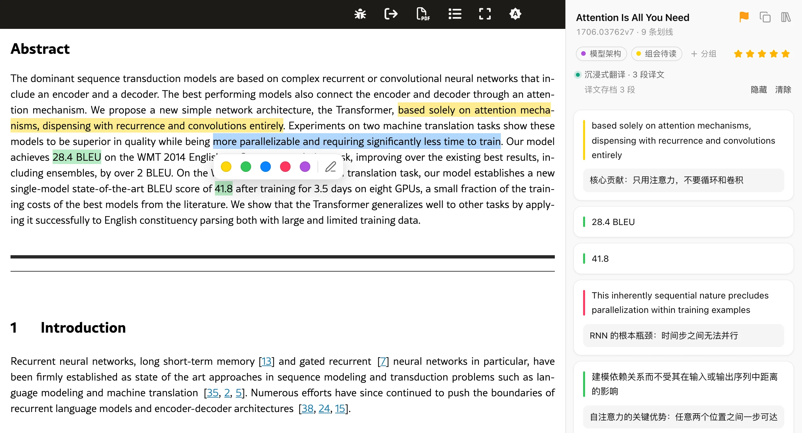
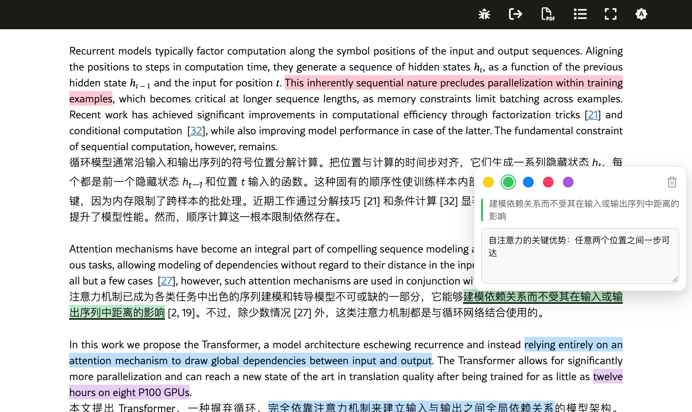
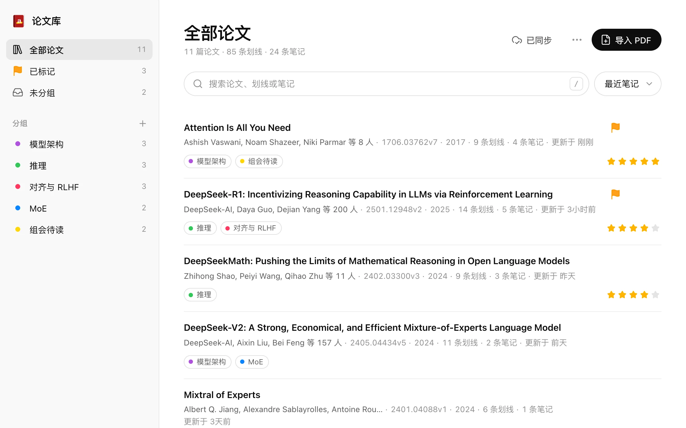

在 arXiv 论文上
划线、写笔记
Highlight and annotate
arXiv papers
一个 Chrome 扩展。在 arXiv 的 HTML 论文页上高亮和批注，原文和沉浸式翻译、陪读蛙显示的译文都能划；笔记随论文保存，换台电脑也在。
A Chrome extension for highlighting and taking notes on arXiv HTML papers — on the original text and on translations from Immersive Translate or Read Frog. Notes stay with each paper, even on another computer.
适用于 arxiv.org/html 和 ar5iv · 支持沉浸式翻译、陪读蛙Works on arxiv.org/html and ar5iv · Supports Immersive Translate and Read Frog

为读论文而设计Built for reading papers
为 arXiv HTML 论文设计，和翻译插件一起用也不会乱。Made for arXiv HTML papers, and plays well with translation extensions.
划线与笔记Highlights & notes
选中文字弹出工具栏，五种颜色一键高亮，或高亮后直接写笔记。点击已有的高亮可以改色、编辑、删除。
Select text to bring up a toolbar: highlight in one of five colors, or highlight and write a note. Click a highlight to recolor, edit or delete it.
原文和译文都能划Works on translations
支持沉浸式翻译、陪读蛙的双语对照。高亮不修改页面结构，翻译插件重新渲染时也不会丢。
Supports bilingual views from Immersive Translate and Read Frog. Highlights never modify the page, so they survive when the translator re-renders.
译文存档Saved translations
翻译插件显示过的译文按段落存档。下次打开时不开翻译插件也能看到，措辞不会变，译文上的笔记也不会漂移。
Translations are saved paragraph by paragraph. They come back next time even without the translator, with the same wording, so notes on them never drift.
侧边栏与导出Side panel & export
侧边栏按文档顺序列出所有笔记，点击跳转到原文位置；整篇笔记可以复制为 Markdown。
The side panel lists every note in document order; click one to jump to it. Copy all notes of a paper as Markdown.
论文库与分组Library & groups
浏览过的论文自动收进论文库，标题和作者从 arXiv 获取。支持分组、标记、评分、排序，以及按标题、作者、笔记内容搜索。
Papers you open go into your library, with titles and authors from arXiv. Group, flag, rate and sort them, and search titles, authors and notes.
同步、备份、导入 PDFSync, backup, PDF import
通过 WebDAV（坚果云等）或 Google Drive 在多台电脑间同步；可导出 / 导入备份。没有 HTML 版的论文可以用 MinerU 把 PDF 转成同样的页面。
Sync across computers via WebDAV or Google Drive, and export or import backups. Papers without an HTML version can be converted from PDF with MinerU.
译文Translations
译文上也能划线Highlight the translation, too
开着沉浸式翻译或陪读蛙读论文时，原文和译文都能划线、写笔记。侧边栏会标出哪些笔记在译文上。
Reading with Immersive Translate or Read Frog on? Highlight and annotate either the original or the translation. The side panel marks which notes sit on translated text.
- 支持双语对照和仅译文两种模式Bilingual and translation-only modes
- 译文按段落存档，措辞不变，笔记不漂移Saved per paragraph, so wording and notes stay put

论文库Library
读过的论文，都在这里Every paper you've read, in one place
打开过的论文自动收进论文库，标题、作者、年份从 arXiv 获取，不用手动整理。
Papers you open are added automatically, with titles, authors and years fetched from arXiv. No manual filing.
- 分组、标记、五星评分，按笔记、评分、划线数排序Groups, flags and star ratings; sort by notes, rating or highlights
- 按标题、作者、划线和笔记内容搜索Search titles, authors, highlights and notes
- WebDAV、Google Drive 同步，或导出备份Sync via WebDAV or Google Drive, or export a backup

你的笔记只属于你Your notes are yours
扩展没有自己的服务器，不收集、不统计、不上传任何数据。The extension has no server of its own. It collects, tracks and uploads nothing.
默认只存在本机Local by default
笔记、论文库、分组和译文存档都保存在浏览器本地。
Notes, library, groups and saved translations stay in your browser.
同步去向由你决定You choose where sync goes
开启云同步后，数据只写到你自己的 WebDAV 服务器或 Google Drive 的应用专用文件夹。
With sync on, data goes only to your own WebDAV server or an app-only folder in your Google Drive.
用到第三方时会说明Third parties, disclosed
论文库向 arXiv API 查询标题和作者；导入 PDF 时文件会上传到 MinerU 解析。
The library asks the arXiv API for titles and authors; imported PDFs are uploaded to MinerU for parsing.
安装Install
装好后打开任意一篇 arXiv HTML 论文，选中文字即可开始划线。Once installed, open any arXiv HTML paper and select some text to start highlighting.
Chrome 应用商店Chrome Web Store
推荐。一键安装，之后自动更新。
Recommended. One-click install with automatic updates.
- 在应用商店页面点"添加至 Chrome"
- 点工具栏右侧的拼图图标，把 arXiv HTML Helper 固定到工具栏
- 打开论文后点扩展图标，在侧边栏里查看本篇笔记
- Click "Add to Chrome" on the store page
- Click the puzzle icon in the toolbar and pin arXiv HTML Helper
- On a paper, click the extension icon to see its notes in the side panel
GitHub ReleasesGitHub Releases
访问不了应用商店时使用。和商店版代码、扩展 ID 相同，但不会自动更新。
For when the store isn't reachable. Same code and extension ID as the store version, but no automatic updates.
- 下载最新版本的 zip，解压到一个固定的文件夹
- 打开
chrome://extensions，开启右上角的"开发者模式" - 点"加载已解压的扩展程序"，选择这个文件夹
- Download the latest zip and unzip it into a folder you'll keep
- Open
chrome://extensionsand turn on Developer mode (top right) - Click "Load unpacked" and choose that folder